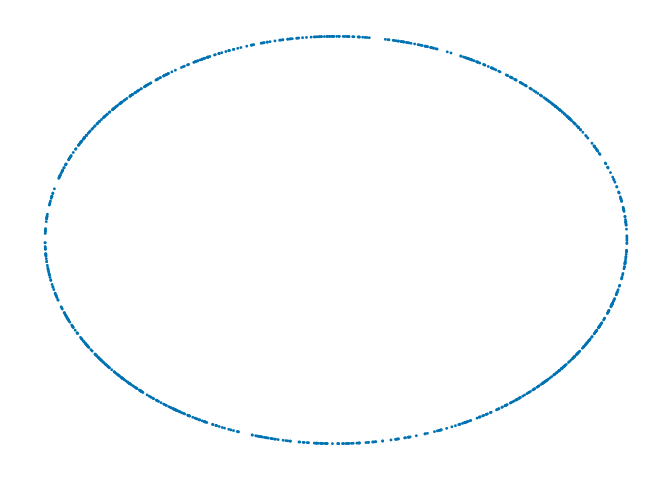
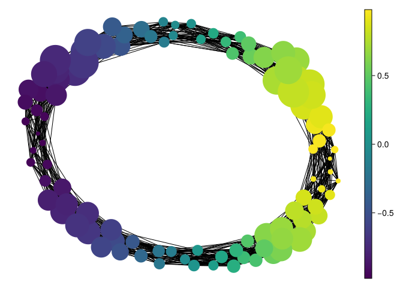
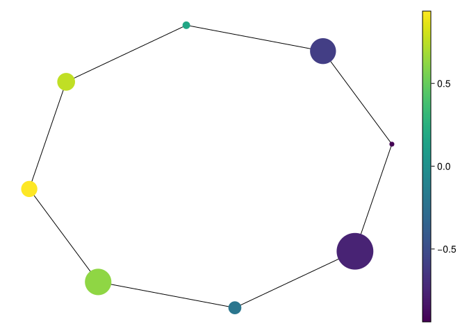

using CairoMakie
using MetricSpaces
using MetricSpaces.Datasets
using TDAplots
using Random
using TDAmapper
using Graphs
Random.seed!(2026)TaskLocalRNG()Another way to reduce the complexity of a metric space is to approximate it by a simplicial complex. Simplicial complexes are like small building blocks glued together: points, line segments, triangles, tetrahedra, and their higher-dimensional analogues.
The Vietoris-Rips complex is defined from a metric space \((X, d)\) and a scale \(r \geq 0\) by
\[ VR(X, r) = \{ [x_0, \ldots, x_k] \; ; \; d(x_i, x_j) \leq r \text{ for all } i,j \}. \]
So the vertices are the points of \(X\), and we add a simplex whenever all of its vertices are pairwise close enough. This is one of the most common ways to turn a metric space into a combinatorial object.
This is the diameter convention used earlier in the book: an edge appears at its length. It is different from the radius of a cover ball. Equal-radius balls can overlap at center distances up to twice their radius, and pairwise overlap does not imply a common intersection of all balls.
Ball Mapper (Dłotko 2019) uses a chosen subset of landmark observations. Given \(X=\{x_1,\ldots,x_n\}\), landmark indices \(L\), and radius \(\epsilon\), define the cover elements
\[ C_l=\{i : d(x_i,x_l)\leq\epsilon\},\qquad l\in L. \]
Each node represents one \(C_l\), and two nodes are joined when \(C_l\cap C_m\ne\varnothing\): an observed sample point must belong to both balls. Two ambient Euclidean balls can overlap without containing a shared observation, in which case there is no Ball Mapper edge.
The output is a graph summarizing overlap of these finite sets. It is not the Rips graph on the landmarks and does not automatically preserve the homology of the original sample. Landmark count and radius govern both compression and what the graph can distinguish.
using CairoMakie
using MetricSpaces
using MetricSpaces.Datasets
using TDAplots
using Random
using TDAmapper
using Graphs
Random.seed!(2026)TaskLocalRNG()To exemplify, consider a circle:
X = sphere(1000, dim = 2)
metricspace_plot(X, markersize = 4)┌ Warning: Found `resolution` in the theme when creating a `Scene`. The `resolution` keyword for `Scene`s and `Figure`s has been deprecated. Use `Figure(; size = ...` or `Scene(; size = ...)` instead, which better reflects that this is a unitless size and not a pixel resolution. The key could also come from `set_theme!` calls or related theming functions. └ @ Makie ~/.julia/packages/Makie/UjJJY/src/scenes.jl:238

Now choose 100 landmarks with farthest-point sampling and build the Ball Mapper graph:
L = farthest_points_sample_ids(X, 100)
bm = ball_mapper(X, L, 0.35)Mapper graph with 100 vertices and 1076 edgesmapper_plot(bm, node_values = node_colors(bm, first.(X)))┌ Warning: Found `resolution` in the theme when creating a `Scene`. The `resolution` keyword for `Scene`s and `Figure`s has been deprecated. Use `Figure(; size = ...` or `Scene(; size = ...)` instead, which better reflects that this is a unitless size and not a pixel resolution. The key could also come from `set_theme!` calls or related theming functions. └ @ Makie ~/.julia/packages/Makie/UjJJY/src/scenes.jl:238

The picture may look ring-shaped, but 100 balls of radius 0.35 overlap many neighbors. A dense ring-shaped graph can have many independent cycles. For a graph with \(V\) vertices, \(E\) edges, and \(c\) connected components, \(\beta_1=E-V+c\):
function ball_diagnostics(M)
counts = [count(C -> i in C, M.C) for i in eachindex(M.X)]
components = length(connected_components(M.g))
(nodes = nv(M.g), edges = ne(M.g), components = components,
graph_beta1 = ne(M.g) - nv(M.g) + components,
covered_points = count(>(0), counts),
maximum_memberships = maximum(counts))
end
ball_diagnostics(bm)(nodes = 100, edges = 1076, components = 1, graph_beta1 = 977, covered_points = 1000, maximum_memberships = 14)For this seed, there are 100 nodes, 1,076 edges, one component, and 977 independent graph cycles. That is far from the circle’s \(\beta_1=1\). Many small graph cycles are triangles. If three balls share an observed point, their triangle would be filled by a 2-simplex in the full nerve, but this graph omits that simplex. Other triangles can have three pairwise intersections without a triple intersection, so blindly filling every graph clique would also construct a different object.
Choosing 100 landmarks does not itself guarantee coverage at any specified radius. The covering radius is
\[ \rho(L)=\max_{x\in X}\min_{l\in L}d(x,x_l). \]
The sample is covered exactly when \(\epsilon\geq\rho(L)\), up to floating-point comparisons. We can measure it directly:
rho_dense = maximum(minimum(dist_euclidean(x, X[l]) for l in L) for x in X)
(covering_radius = rho_dense, chosen_radius = 0.35,
all_points_covered = ball_diagnostics(bm).covered_points == length(X))(covering_radius = 0.04621368803530014, chosen_radius = 0.35, all_points_covered = true)This checks the observed sample, not every point of an unknown underlying circle. A sparse sample can miss whole regions even when every observation is covered.
Use eight well-spread landmarks and radius 0.45 on the same sample:
Random.seed!(2026)
L_sparse = farthest_points_sample_ids(X, 8)
bm_sparse = ball_mapper(X, L_sparse, 0.45)
rho_sparse = maximum(minimum(dist_euclidean(x, X[l]) for l in L_sparse) for x in X)
(covering_radius = rho_sparse, diagnostics = ball_diagnostics(bm_sparse))(covering_radius = 0.39004068833489347, diagnostics = (nodes = 8, edges = 8, components = 1, graph_beta1 = 1, covered_points = 1000, maximum_memberships = 2))mapper_plot(bm_sparse, node_values = node_colors(bm_sparse, first.(X)))┌ Warning: Found `resolution` in the theme when creating a `Scene`. The `resolution` keyword for `Scene`s and `Figure`s has been deprecated. Use `Figure(; size = ...` or `Scene(; size = ...)` instead, which better reflects that this is a unitless size and not a pixel resolution. The key could also come from `set_theme!` calls or related theming functions. └ @ Makie ~/.julia/packages/Makie/UjJJY/src/scenes.jl:238

This seeded comparison has eight nodes and eight edges in one component, hence one graph cycle, and covers all 1,000 observations. Its measured covering radius is about 0.390, below the chosen 0.45. Fewer landmarks make a simpler graph here, but an inadequate radius could also leave observations uncovered. Comparing the counts and coverage gives us more information than either drawing alone.
Node marker size is scaled by the number of member observations, and color here is their mean first coordinate. The default graph layout is a drawing aid: node positions and drawn edge lengths are not original metric coordinates. Nodes can share observations, so their sizes are not disjoint population counts.
Ball Mapper can reduce the number of graph nodes on a large dataset, but storing the memberships and checking their overlaps still costs work. Claims of topological approximation need assumptions about sampling and the cover, beyond a recognizable plot.
\(\beta_1=42-20+1=23\). A ring-shaped layout cannot change that count. A full nerve with higher simplices could have a different first Betti number.
No. Ball Mapper tests intersection of the finite membership sets. Ambient ball overlap is insufficient.
At 0.25 some observed point lies outside every landmark ball. At 0.35 every observed point is covered. This proves coverage of the sample, not recovery of the topology of the underlying population.